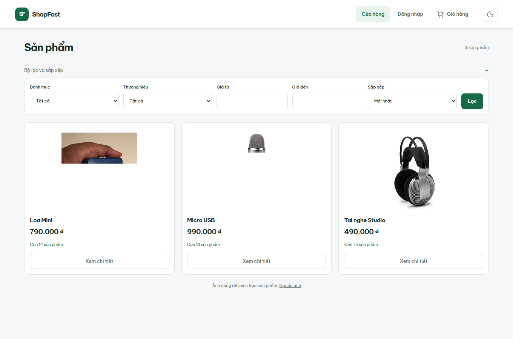
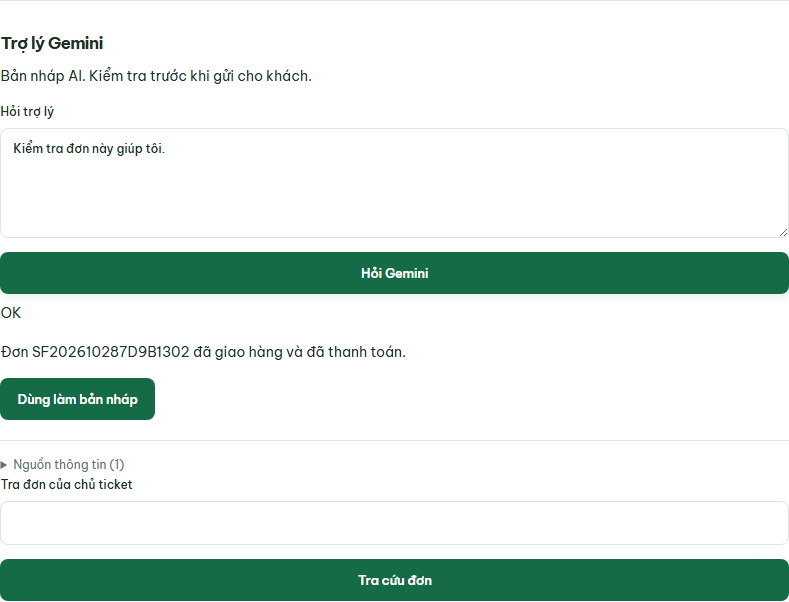

Bài toán
Mua xong, khách cần biết
đơn hàng đang ở đâu.
“Đơn của tôi đã giao chưa?”
01 / Khách hàng
Theo dõi đúng đơn
của mình.
02 / Nhân viên kho
Cập nhật trạng thái,
không bán vượt tồn.
03 / Nhân viên hỗ trợ
Tra cứu nhanh,
trả lời có căn cứ.
Demo sản phẩm
Một đơn hàng, bốn vai trò.

-
Khách hàngChọn hàng, đặt đơn.
- KhoChuẩn bị, giao hàng.
- Hỗ trợTra cứu theo ticket.
-
Quản trịTheo dõi tác vụ nền.
Bảo vệ nghiệp vụ
Đặt hàng an toàn,
kể cả khi request được gửi lại.
-
01
Giá do server tính
Kiểm tra lại giá và điều kiện ưu đãi.
-
02
Giữ tồn trong DB
Transaction và ràng buộc bảo vệ số lượng.
-
03
Không tạo đơn trùng
Idempotency cho thao tác đặt hàng.
Tạo đơn + giữ tồn + ghi outbox→Cùng một transaction
Luồng dữ liệu
Trạng thái tới ngay.
Tác vụ nặng chạy nền.
Cập nhật đơn hàng
Kho cập nhật→API + DB→Socket.IO→Khách hàng
Hóa đơn và email
Nghiệp vụ→Outbox→BullMQ / worker→PDF / email
Cache phục vụ catalog. Rate limit bảo vệ API và đăng nhập.
Demo trợ lý Gemini
Tra đúng dữ liệu.
Duyệt trước khi thay đổi.

-
Gemini chọn tool
Tra đơn hoặc kiểm tra tồn.
-
Backend xác thực
Kiểm quyền, đọc dữ liệu DB.
-
Nhân viên xác nhận
AI chỉ đề xuất đổi nhãn.
- Yêu cầu chưa rõ → hỏi thêm thông tin.
Kiến trúc triển khai
Một EC2, hai tiến trình backend.
Trình duyệt
HTTPS →
AWS EC2 · Sydney
Nginx→NestJS API→PostgreSQL
Redis 7 / BullMQ↔NestJS worker
API / worker →
Gemini, Resend
Backup →
S3 riêng tư
GitHub Actions → GHCR + AWS OIDC / SSM → EC2
Modular Monolith giúp giữ transaction trong một DB và giảm thành phần
vận hành.
Kiểm chứng
Chạy được là bước đầu.
Test lỗi phải chặn được merge.
153
test unit / integration đạt
Test cố ý sai → pipeline thất bại → PR bị chặn
CI xanh: release 378b747
·
CI chặn test lỗi: PR 9
Vận hành
Backup phải khôi phục được.
7 giây
Restore vào DB cô lập
Lần diễn tập 29/10/2026
- Checksum backup khớp.
- Số bản ghi và dữ liệu được kiểm tra.
- Đăng nhập, đọc đơn thành công.
- Hóa đơn PDF được đối chiếu.
Deploy: kiểm health trước khi chuyển bản.
Giữ bản trước để phục
hồi khi candidate không đạt.
Kết quả
Một luồng nghiệp vụ.
Có dữ liệu để kiểm chứng.
Khách theo dõi đơn. Kho cập nhật tiến độ.
Nhân viên hỗ trợ tra
cứu trên dữ liệu thật.
shopfast.tuanpq.com
Một EC2 · Thanh toán mô phỏng · Đối tác demo